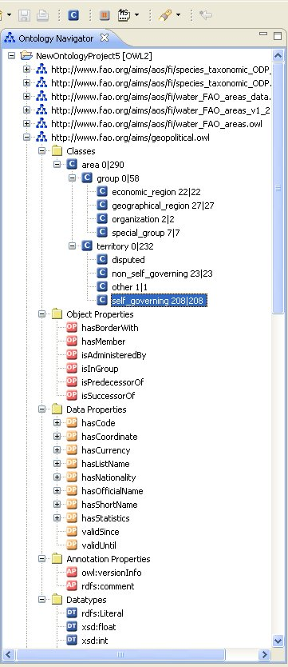

The Ontology Navigator displays the different OWL ontology projects and their corresponding ontologies. The navigator is a hierarchical structure where each ontology project can hold multiple ontologies, which can refer to each other (via import statements). Each ontology contains some folders for the different entity types that exist in OWL. Within these folders the entities are arranged hierarchically. You can create, change, move, copy, and delete ontology elements in the navigator. The different actions possible are listed in the appropriate context menus.

To open the context menu of an element, click on the element using the right mouse button. If an element contains further sub-elements, then a plus sign is displayed on the left of the element. A click on this plus sign expands the sub-elements. In order to close the view of the sub-elements, click on the minus sign which shows besides the parent element.
Many nodes that are displayed in this tree can be dragged-and-dropped in order to modify the hierarchical structure of the ontology. For example, a class can be moved to a new superclass by simply dragging it to the new location. When holding the Ctrl key and dragging a node then, you will see the mouse cursor change to contain a little "+" icon. When dropping an entity it will not be moved to the new location but it will be copied there, resulting in additional subClassOf or subPropertyOf axioms.
The Ontology Naviagtor can also give some information about the number of individuals which are contained in the ontology for each class. This helps in the task of locating instances. In the screen shot we see that there are 208 instances of the class "self governing countries". Its super class "territory" has 232 instances. All of them are inherited from sub-classes and no direct instances. With the button with the red "#" icon in the toolbar you can switch this instance-counting on and off, since, for big ontologies this can be time consuming.
Within an OWL project the Ontology Navigator hosts different types of entities. When selecting one of the nodes, the corresponding Entity Property panel (in the right part of the screen) will display the details of the recently selected entity. The Ontology Navigator hosts the following types of entities: